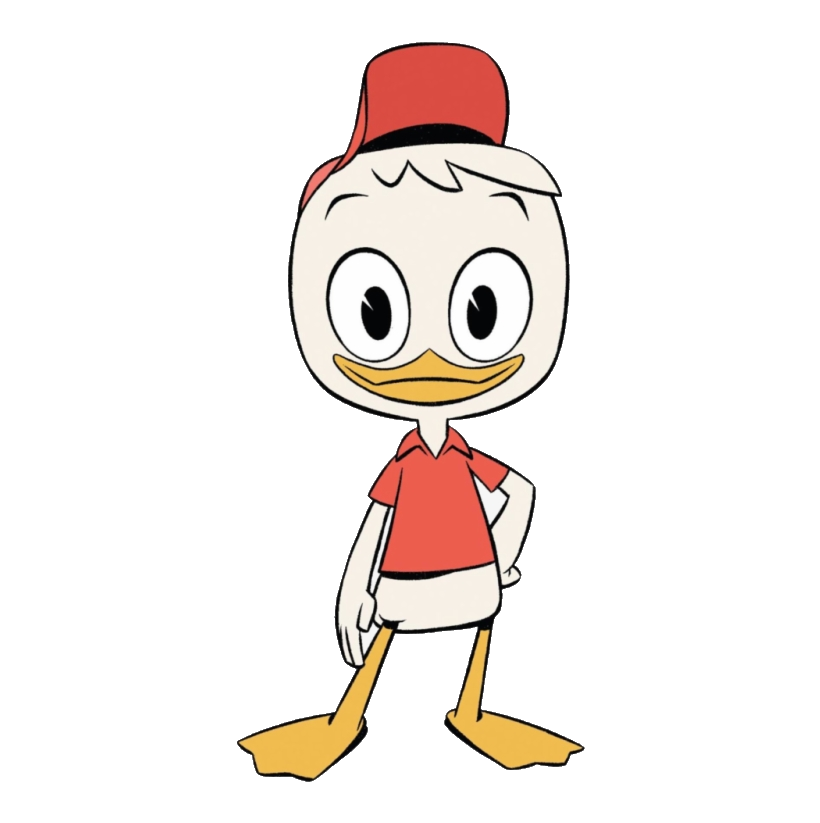
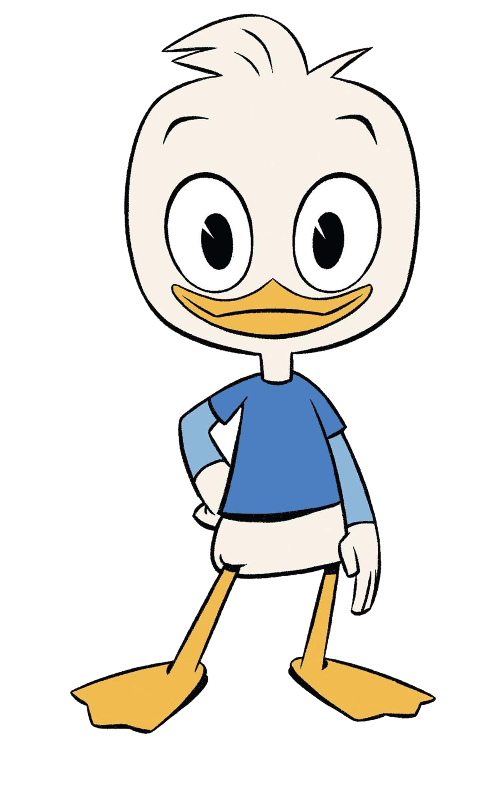
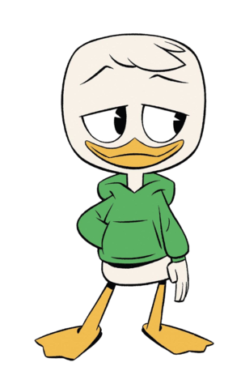

my children
my favorite child, huey
he is the favorite child because he likes the color red, which is a different hue of my favorite color, orange.
Huey was born to Sratchcats dotMIT's ex-wife, Donald Duck, who also loves and appreciates Huey with her heart and soul.
He goes to MIT as a duck, so far, he's been successful in his endevours as a duck major. Huey shows much promise for
the family legacy.
ykeyisfkldjsfdsfsfdfasfdsbvsahfejbnvldhfjdshbvakfhkcbdha no one will ever see this so i
can say whatever i want and no one will see, which is okay, but i just wanted to say that everyone is doing great
and people are doing great and it's wack that there are people out there who have no idea how great humanity is which is so crazy
and wild bro. omfg this is gonna go on for ever bro i hate this fhdjfhebfggf
bfjdklhdsafdabvdshfjsdhfbvsvhahfjt hsi djsfsdjfhdsj fbjkh h euihdsfjhdsjfja;sdfhdsjfhsda'fhsdjfkd
dfklsadfhsdjfkdskaghjdvbkhfavbhfdjbacbhfjl;dafhlhfjdavsbcbvjkadhfdsla;f h fhds hfdjfh jh flhfld;jh f;jsdh fdsjfh sdjhsdk kdjh
hdjklefeb ewhfo hf hjfhdkf hdlfh dlsfh dl fdf hj
my middle child, dewey
hfj;fjdsjak;fhjkldahsfdklhsa;ffdasfsdfa fds fds f sdaf sa f ds f sda f sadf dsah
Dewey is the second child, the most average one of the flock. A straight B student,
Dewey did not achieve his brother's standard of MIT and ended up becoming a buisness major at Arizona State. He is loved averagly by his mother and father,
although divorced, still agreed that he was horribly average and would amount to an average man. Still shows decent promise in his future
to take on his brother's legacy as the best duck ever.
ah go hfjllhfajdhf kjldfh dh d hfd hfdkjfh dklsfh dlskhfdlsfh dshfldfh dlsf hdsjfklh dsj hfd fhdsl fhds f
dsf d fdkslfhdsklhf djkhfdk hfdkjlh fdlsh fdjk hkjl dhdkh fjdkhfjdkhf dkl fhdlk fhdlkfh dkjhfdjkf hdk lfhdl fd hfdls fhdsl fhdjk fhlsf hdhf asdf
df hjsdlfh sdl hfdlsjh fjls fhldskfh dlskfhjd hfjdsh fldhf dl hfldjfh dsfh djfhdjkhfdlk hdljf hdkjf hkldfh jfh dalh fdl fhaldfh adl fhdsahf dsjh fj
df d fhdslf hdsjkf hdksfh dsjfhklsadkfhdljfhjakldfhadhflakdfhdkjfha
mY smAlLesT bOy, lOusIe
ahhhkghgjvyhjvgxfchgvjbkhfjuykuhbvhgfhahaahahahahaahahhaha
we dont talk abt him, he's on here because otherwise we'd get sued :(